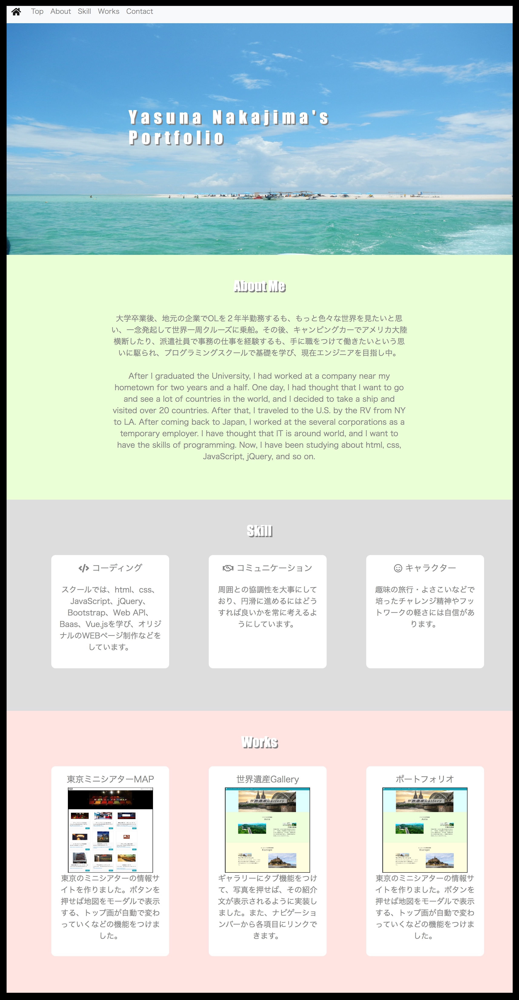

About Me
大学卒業後、地元の企業でOLを２年半勤務するも、もっと色々な世界を見たいと思い、一念発起して世界一周クルーズに乗船。その後、キャンピングカーでアメリカ大陸横断したり、派遣社員で事務の仕事を経験するも、手に職をつけて働きたいという思いに駆られ、プログラミングスクールで基礎を学び、現在エンジニアを目指し中。
After I graduated the University, I had worked at a company near my hometown for two years and a half. One day, I had thought that I want to go and see a lot of countries in the world, and I decided to take a ship and visited over 20
countries. After that, I traveled to the U.S. by the RV from NY to LA. After coming back to Japan, I worked at the several corporations as a temporary employer. I have thought that IT is around world, and I want to have the skills of programming.
Now, I have been studying about html, css, JavaScript, jQuery, and so on.
Skill
-
コーディング
スクールでは、html、css、JavaScript、jQuery、Bootstrap、Web API、Baas、Vue.jsを学び、オリジナルのWEBページ制作などをしています。コミュニケーション
周囲との協調性を大事にしており、円滑に進めるにはどうすれば良いかを常に考えるようにしています。キャラクター
趣味の旅行・よさこいなどで培ったチャレンジ精神やフットワークの軽さには自信があります。Works
-
東京ミニシアターMAP
東京のミニシアターの情報サイトを作りました。ボタンを押せば地図をモーダルで表示する、トップ画が自動で変わっていくなどの機能をつけました。
-
世界遺産Gallery
トップ画をカルーセルにしてページに深みを出しました。また、ギャラリーにタブ機能をつけて、写真を押せば、その紹介文が表示されるように実装しました。
-
ポートフォリオ
アニメーションをつけ、ページ全体に柔らかい動きをつけました。また、ナビゲーションバーから各項目にリンクできます。レスポンシブ対応ページにしました。